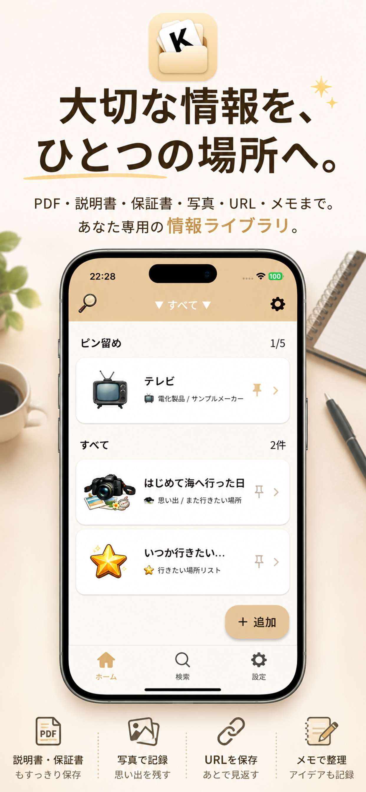
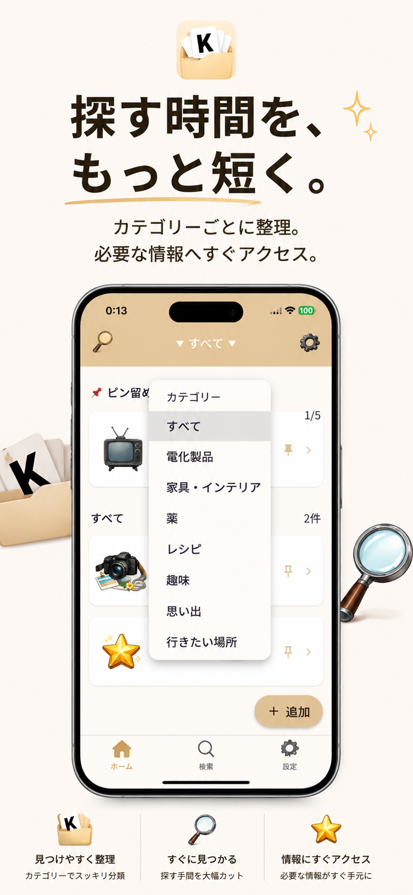
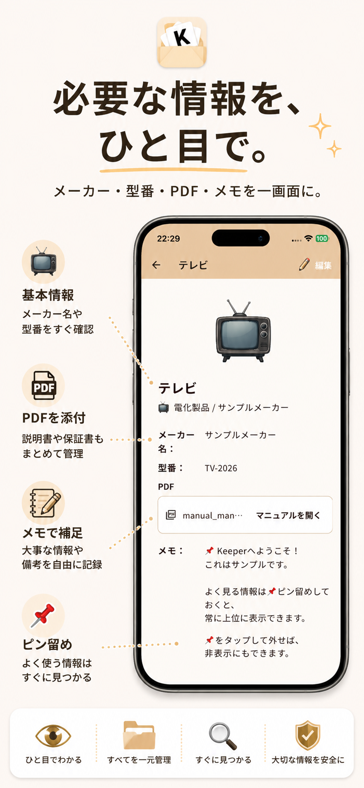
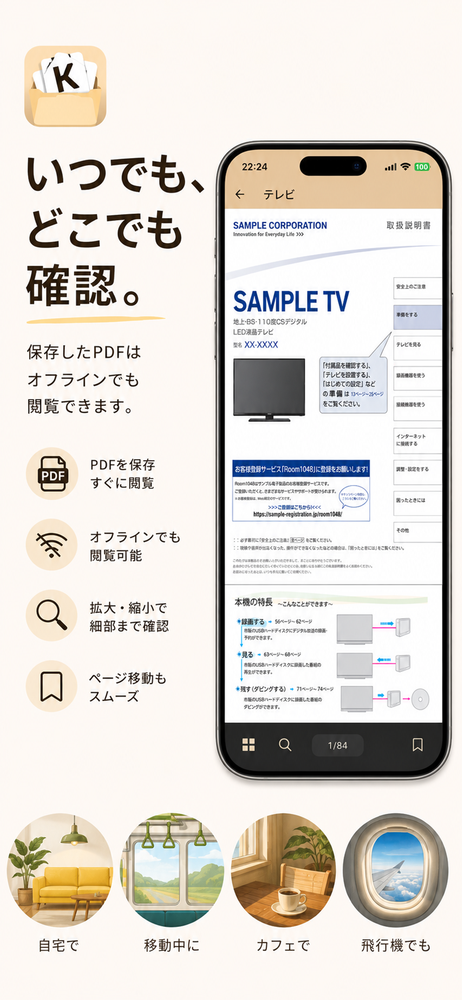
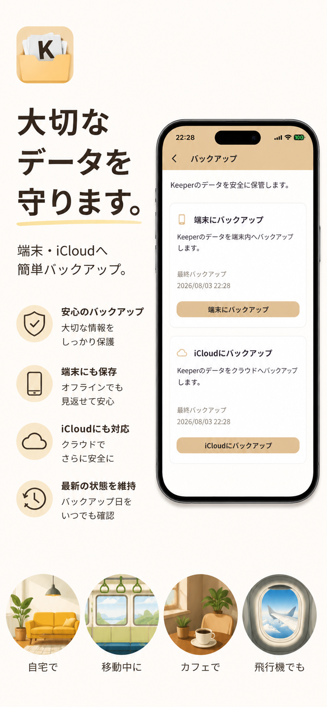
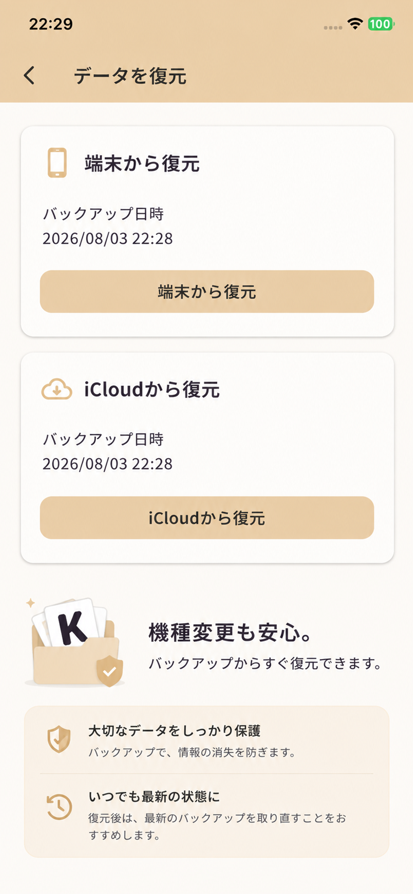
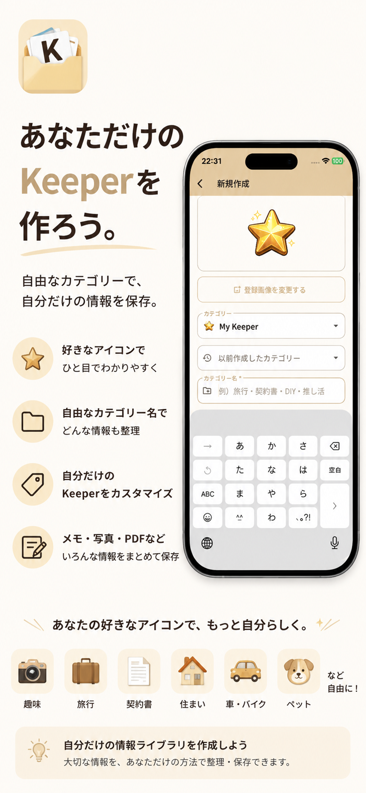
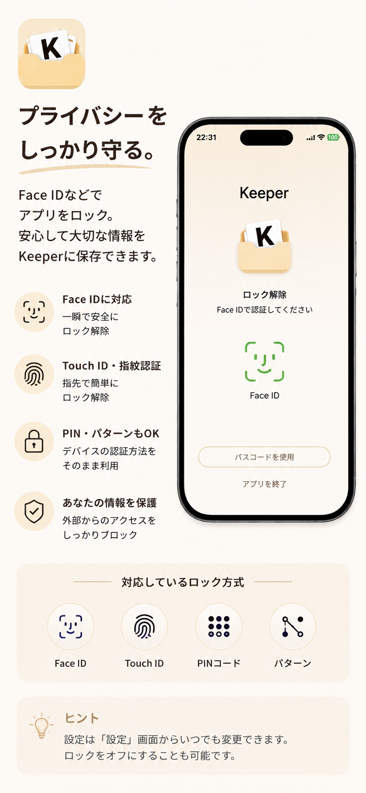

📷 型番を撮る
カメラで撮影するか、端末に保存されている画像を選びます。
カメラや画像からOCRで製品の型番を読み取り、取扱説明書を検索。
見つけたマニュアルを選んで、そのままKeeperできます。
でも、Keeperは説明書だけのアプリではありません。
PDF、URL、写真、メモ、レシピ、仕事、趣味、思い出まで。
大切な自分だけの情報を、自由にまとめてKeeperできます。
製品の型番を手入力して検索する手間を減らすために、 KeeperはOCRによる型番読み取りとマニュアル検索に対応しています。
カメラで撮影するか、端末に保存されている画像を選びます。
画像から製品の型番を読み取り、その型番をもとに 取扱説明書の候補を検索します。
見つかったマニュアル候補を確認。 保存したいものを自分で選んでKeeperできます。
説明書、PDF、URL、写真、メモ、レシピ、仕事、おでかけ、趣味。 「あとで見たい」「なくしたくない」と思った情報を、 自分の好きなカテゴリーでまとめられます。
取扱説明書はもちろん、資料や大切なPDFも保存。 必要なときにすぐ確認できます。
写真や画像も情報と一緒に保存。 思い出や大切な記録にも使えます。
後で読みたいWebページや、仕事・趣味の参考情報なども ひとつにまとめられます。
説明書に限らず、レシピ、仕事、おでかけ、趣味など、 自分だけの情報を自由に記録できます。
カテゴリーや検索を使って、 Keeperした情報へすばやくアクセスできます。
Face ID、Touch ID、指紋認証など、 端末の認証機能を利用してKeeperを守れます。
Keeperの情報はバックアップして、 機種変更などに備えることができます。
Google Driveのアプリ専用領域へバックアップ。 大切なKeeperデータを保護します。
端末またはiCloudへバックアップ。 バックアップしたデータから復元できます。
大切な情報をKeeperして、整理して、 必要なときにすぐ見つける。 Keeperの主な画面をご覧いただけます。








← 横にスクロールしてKeeperの画面を見る →